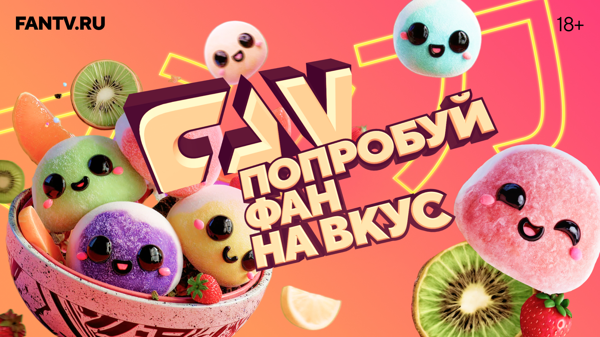
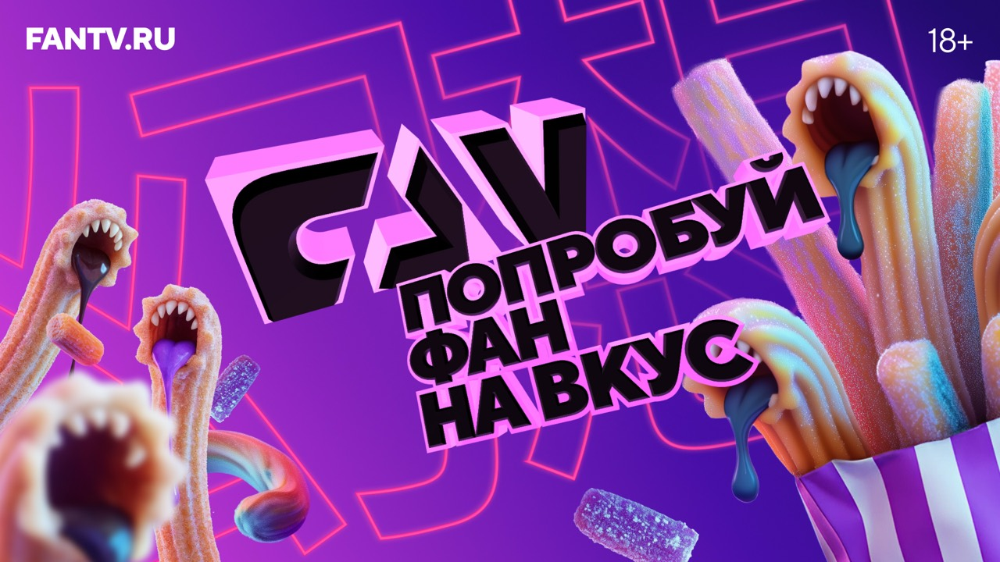
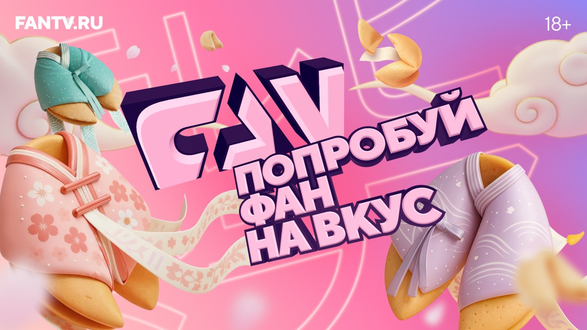
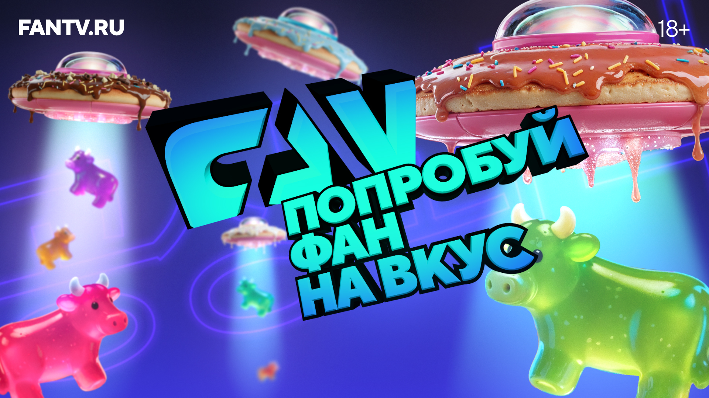

Телеканал FAN · 2025
FAN: десертный мир впечатлений
Перед нами была задача превратить канал из источника контента в пространство удовольствия, куда возвращаются за яркими ощущениями. Так и появилась идея с милыми харизматичными маскотами на каждый жанр.
FAN — узнаваемый субкультурный медиабренд с лояльной аудиторией, уже знакомой с его жанрами, интонацией и стилем. А мы создали «меню», где каждый жанр работает на узнаваемость. Мы не просто обновили визуал, а создали целостную экосистему присутствия бренда. Используя образы маскотов, мы превратили обычные рекламные макеты в инструменты сторителлинга.
Теперь путь пользователя по каналу FAN — это знакомство с характерами и вкусами.



